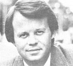

CONGRESSMAN TONY HALL
The Energy Tax Act of 1978 scented like good news, since it offered generous credits to individuals and businesses using alternative energy installations to cut down on their needs for nonrenewable fuel sources. However, since that legislation was passed, its geothermal clause has fallen prey to what Rep. Tony P. Hall (D-Ohio) calls an "arbitrary" ruling of the Internal Revenue Service.
In addition to its solar and windpower provisions, you see, the Energy Tax Act sought to encourage the use of geothermal energy by granting a 407, tax credit on the cost of "earthpowered" equipment to heat or cool residences, and a 10% credit for commercial buildings (with a maximum allowance of $4,000) .
However, the IRS has ruled that-in order for an owner to qualify for the tax credit-his w her geothermal source must register a temperature of at least 122°F. That regulation, unfortunately, made most buildings in the eastern half of the U.S. ineligible . . . since-in that region-ground water of about 50°F provides much of the available geothermal energy.
And that, says Rep. Hall, "is precisely the sort of petty bureaucratic nonsense that we're trying to eliminate from the federal government". Furthermore, maintains the Ohio lawmaker, 'The IRS temperature ruling ... ignores the tremendous energy-saving potential of lower-temperature geothermal sources that are just as valuable as other forms of renewable energy."
To thwart the tax bureau's action, Hall and his colleague Rep. Don Clauses (R-Calif.) have introduced bipartisan legislation (House bill 4091) tnat would eliminate the IRS's ability to set a temperature requirement. At press time, the Hall-Clauses bill was scheduled for hearings before the House Ways and Means subcommittee of Select Revenue Measures.-JM.
JOHN GOFMAN
Dr. John Gofman-former atomic energy scientist, renowned heart disease researcher, antinuclear advocate, and the subject of MOTHER's Plowboy Interview in issue 68-has written a recently released book called Radiation and Human Health (Sierra Club Books, $29.95). This massive (908-page) tome is the result of years of study and is, as its subtitle proclaims, "a comprehensive investigation of the evidence relating lowlevel radiation to cancer and other disease".
The detailed textbook serves several important purposes
[1] It demystifies the study of radiation. Even though there are reams of statistical calculations ("this book is not bedtime reading," Gofman notes), every mathematical step is clearly and completely explained. The subject can now be understood by the interested and studious layperson . . . not just by the "expert".
[2] It establishes a consistent numerical standard for identifying cancer mortality risk. Taking special care to balance various studies by considering the differences in their followup periods, the age of their subjects, and the quality of their data, Dr. Gofman has come up with a common base for estimating the cancer mortality rate per rad exposure by age. This methodology breakthroughwhich is supported by over 200 pages of clear, concise textprovides the reader with a concrete tool for estimating lowdose radiation damage.
[3] It responds to specific questions.
Should an airline stewardess avoid flying during early pregnancy? Is watching color television a significant radiation hazard'.' What are the odds that giving radioactive iodine to a 25-year-old with hyperthyroidism will cause the patient to die later of a radiation-induced cancer? The text discusses these and many more "real life" radiation hazard situations.
Dr. Gofman has made an enormous contribution to public well-being by writing Radiation and Human Health. Let's hope that other radiation scientists respond seriously and honestly to his findings.-PS.
JIM CHANNON
In 1978 Lt. Col. Jim Channon was assigned by the U.S. Army's Task Force Delta-a "think tank" of officers-to investigate the self-awareness movement in California and evaluate how its ideas might be used in the military group's effort to "humanize" the armed services. After attending over 100 sessions on New Age philosophies and activities, Channon synthesized what he felt was best in the various human-potential disciplines into a hypothetical "Natural Guard" which-somewhat to the officer's surprise-has begun to make the transition from idea to reality.
The First Earth Battalion (as as Channon calls his proposed new army unit ) will comprise men and women known as "Warrior-Monks" . . . whose extraordinary skills would combine courage and strength with sensitivity and the spirit of sacrifice. The spiritual soldiers will-it's planned-move beyond traditional weaponsbased combat ( which Channon labels Force of Arms) to achieve the higher ethic of Force of Spirit . . . and, ultimately, Force of Heart. At the proposed First Earth Battalion Academy in Santa Fe, New Mexico, recruits will study meditation, fasting, isolation, philosophy, defensive martial arts, and other nondestructive ways of dealing with crises. Eventually, Channon expects his warrior-monks to intervene in international and local conflicts, where it's hoped that they'll be able to prevail by a show of superior ethical force.
The military hierarchy's initial reaction to Channon's project has been encouraging: He was invited to present his concept to the cadets at West Point... and that presentation was videotaped for further distribution. However, the futurist now needs funds-which will have to come either from private sources or from Congress-to transform his vision into a functioning program. Chanson emphasizes that membership in the First Earth Battalion is open to everyone: ''If you want to be a member, you already are," he says. 'In tact, you can begin right now to prepare yourself for the more precise training that will take place within the battalion.- JM.
IN BRIEF...
Pulitzer Prize-winning biologist and author RENE DUBOS ( who was interviewed in MOTHER NO. 6) has written a new book, Celebrations of Life (McGraw-Hill, $12.95), which suggests local solutions to global problems . . .. Another familiar name on publishers' rolls is ROBERT RODALE, whose collection of recommendations for future lifestyles is titled Our Next Frontier ( Rodale Press, $14.95). . . .'The late-summer opening of our nation's first methanol service station-which is owned by Future Fuels of America-in Sepulveda, California earned the praise of Los Angeles mayor TOM BRADLEY, and actors CHARLTON HESTON and LORNE GREENS. . Congressmen ALBERT GORE: (D-Tenn.), NEAL SMITH (D-Iowa), and HENRY WAXMAN (D-Calif.) have introduced a bill to call for mandatory labeling of sodium and potassium content in processed foods .... Cancer pioneer and Plowboy Interviewee (MOTHER NO. .54) DR. HAROLD MANNER recently conducted a seminar for members of the medical profession on his innovative method of treating degenerative diseases such as cancer and arthritis. Dr. Manner has also producedthrough his Illinois-based research foundation-a booklet that outlines the "Manner Metabolic Therapy" for cancer. -JM.
|
|
 |
|